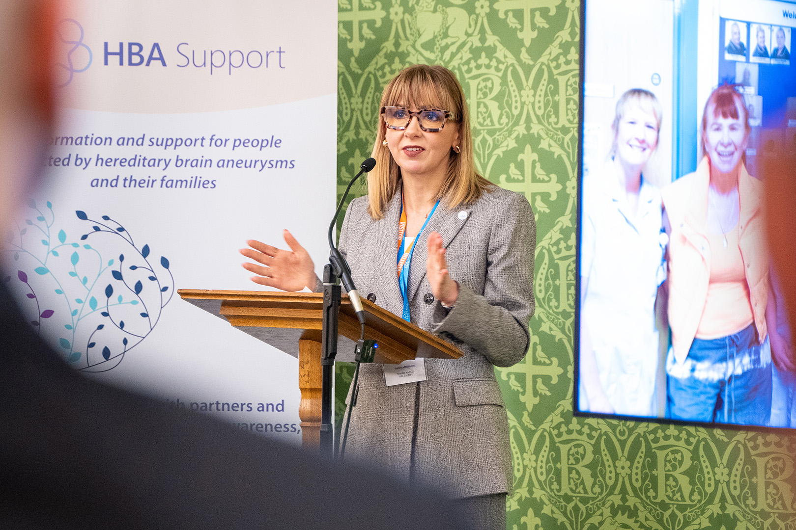
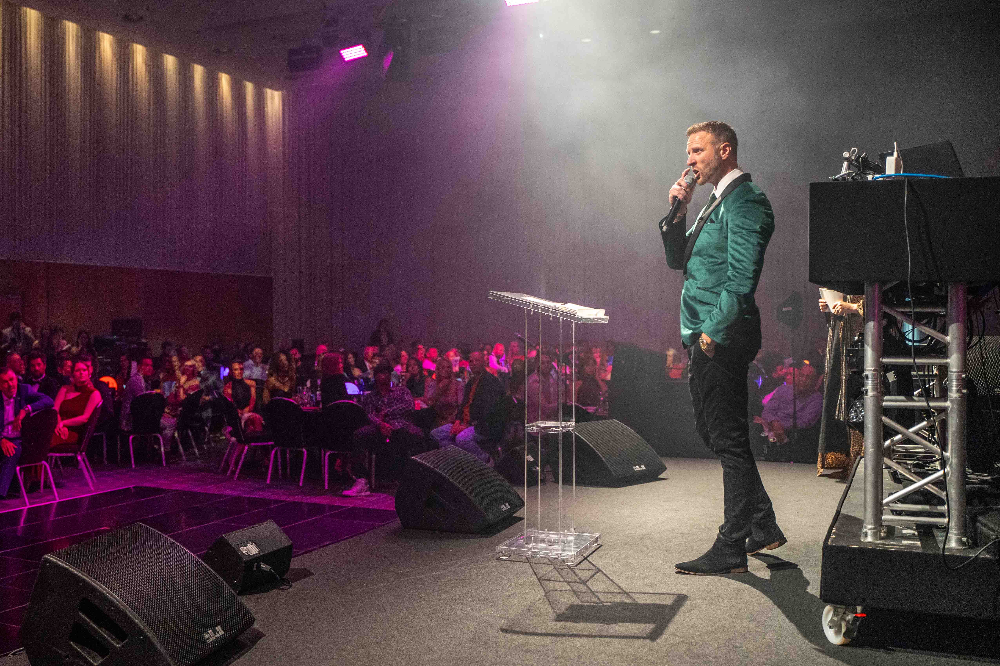
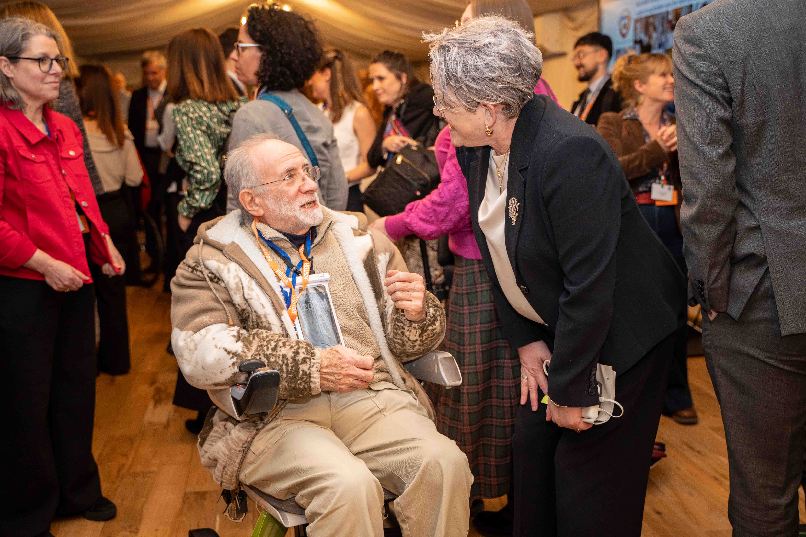
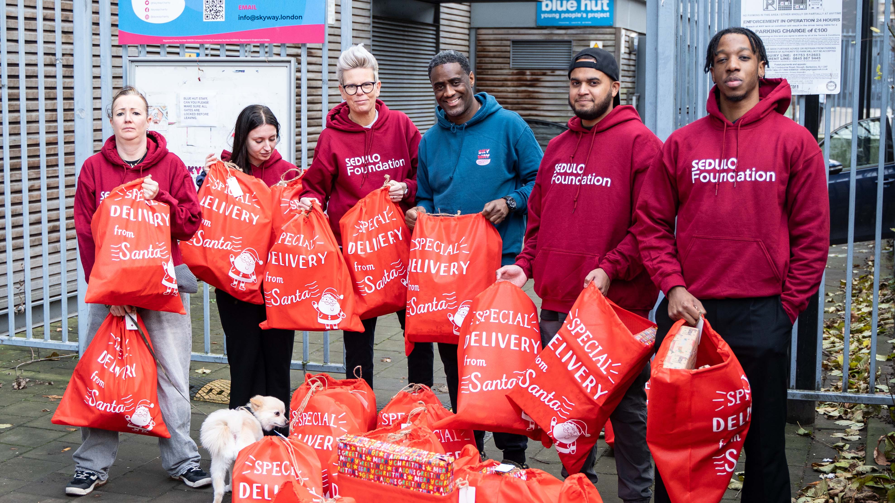
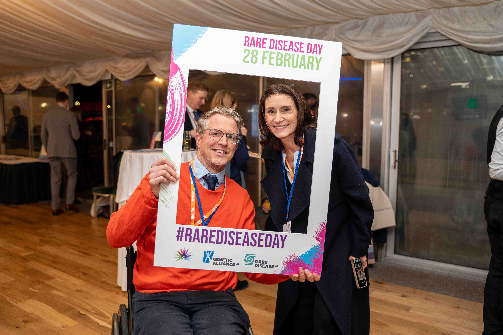

Organisations I've worked with


Experienced in covering awareness days, community events, fundraising galas and parliamentary receptions, with a calm and reliable approach suited to both formal and celebratory environments.
Delivering impactful, press-ready imagery and campaign content to support fundraising, stakeholder engagement and communications, with next-day turnaround available for time-sensitive parliamentary and awareness events.
Flexible half-day and short-format coverage options available. London-based and working nationwide, with travel costs discussed and agreed transparently in advance.
Get In TouchOrganisations I've worked with




Events
Half-day & full-day coverage
Awareness days, community events & fundraising galas
UK & International travel - no hidden travel costs
Photography
Social & press-ready imagery
Stakeholder & campaign use
Video
Speech & panel filming
Full event coverage
Short highlight edits
Delivery
Priority image turnaround (within 24 hours)
Press-ready selects for immediate use

Campaign and event film for charities and purpose-led organisations
Sedulo Foundation: Fresh Starts Campaign
HBA Support: Westminster Policy Launch 2026
Simple & Straightforward
From first conversation to final delivery - a clear, reliable process every time.
We start with a conversation about what you need, your audience and how the content will be used.
Planning, locations, shot lists and logistics sorted before the day.
Handling direction, lighting and capturing what matters.
Careful selection, colour grading and retouching to bring the work to life.
Final files delivered in your chosen format, on time and ready to use.
If you're planning an awareness event, parliamentary reception, community event or charity fundraiser, feel free to get in touch to discuss coverage.